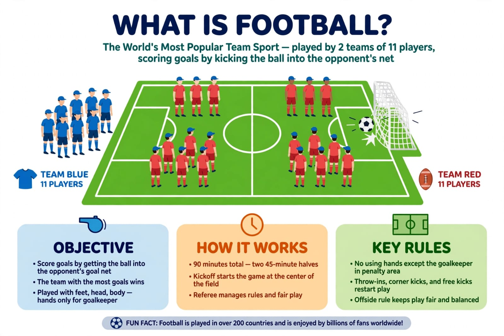
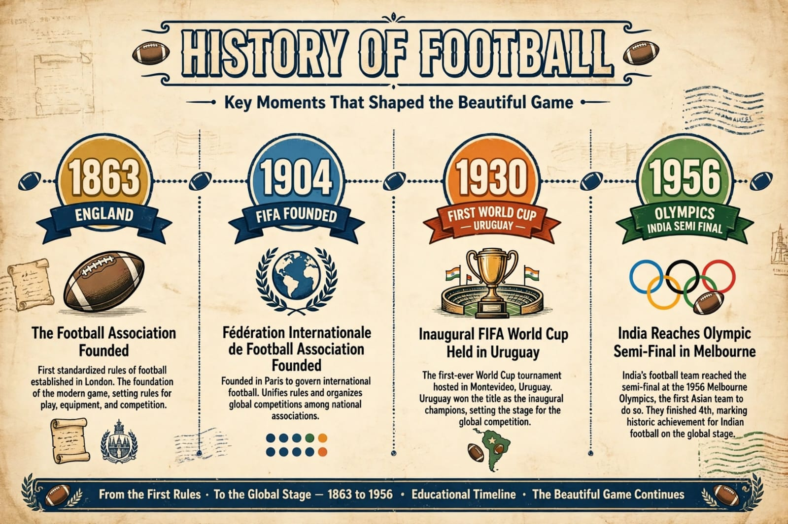
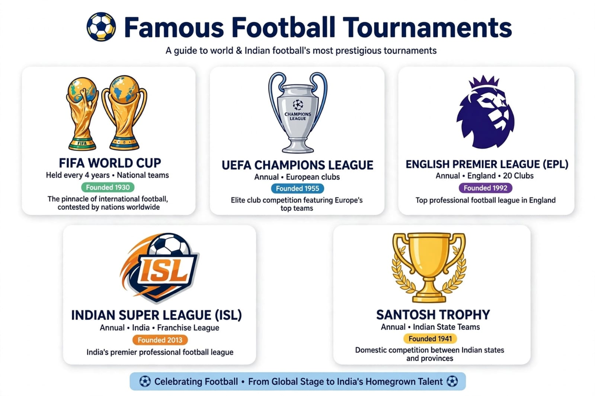
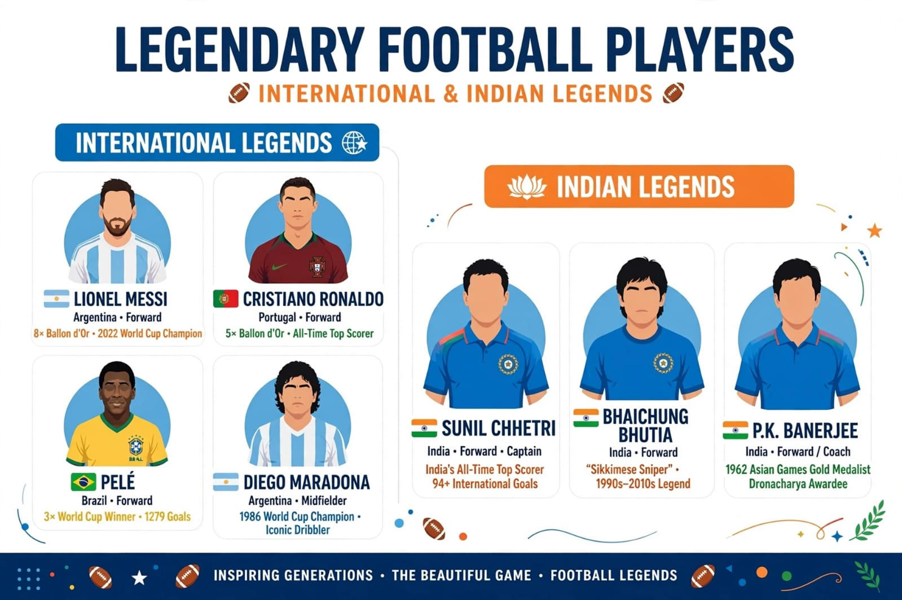

The world's most popular sport played by over 250 million players in 200+ countries
1. What is Football?
Football, also called Association Football or Soccer, is a team sport played between two teams of 11 players. The objective is to score more goals than the opposing team by getting the ball into the opponent's goal. It is played for 90 minutes (45-45 minutes two halves).

2. History of Football

- Modern football started in England in 1863
- FIFA was founded in 1904
- First FIFA World Cup was held in 1930 in Uruguay
- India's best performance: 1956 Olympics Semi-final
3. Basic Rules
- 11 players per team including 1 Goalkeeper
- No hands allowed except Goalkeeper
- Offside, Corner, Free-kick, Penalty are key rules
- Yellow Card = Warning, Red Card = Out of match
4. Player Positions
| Position |
Role |
| Goalkeeper (GK) |
Stops goals, only player who can use hands |
| Defender (DF) |
Defends the goal area |
| Midfielder (MF) |
Connects defense and attack |
| Forward (FW) |
Scores goals |
5. Famous Tournaments
- FIFA World Cup (Every 4 years)
- UEFA Champions League
- English Premier League (EPL)
- Indian Super League (ISL)
- Santosh Trophy (India)

6. Legendary Players
- International: Messi, Ronaldo, Pele, Maradona
- Indian Legends: Sunil Chhetri (India's highest scorer - 94 goals), Bhaichung Bhutia, P.K. Banerjee
- Sunil Chhetri is 4th highest international goal scorer in the world

7. Why Football is Special?
Football needs only one ball to play, which makes it the most accessible sport in the world. It improves stamina, teamwork, discipline and leadership. In India, football is rapidly growing with ISL and youth academies.